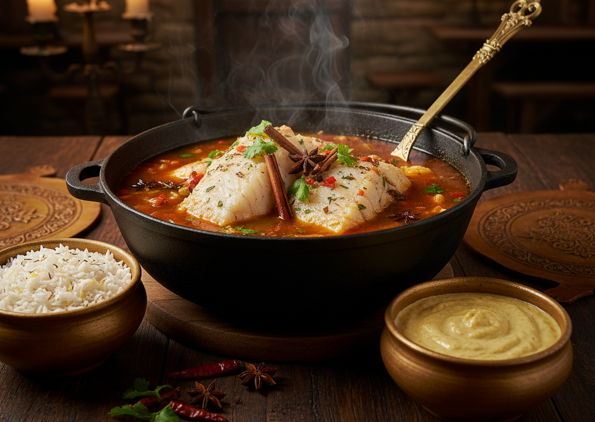
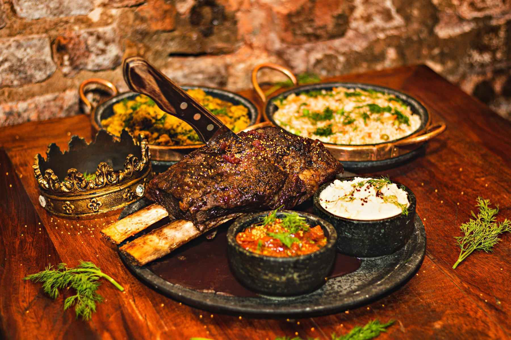

Nosso Pergaminho de Iguarias
| O Prato | Descrição do Bardo | Tributo (Preço) |
|---|---|---|
| Tesouro dos Mares em Caldeirão | Peixe nobre cozido em caldeirão com temperos exóticos do novo mundo. Acompanha arroz do reino e pirão dos bravos. | R$ 55,00 |
| Corte do Rei na Brasa | A mais nobre peça bovina, forjada no fogo com alho e sal. Servida com batatas rústicas, farofa do barão e vinagrete da corte. | R$ 75,00 |
| Banquete dos Nobres (Sábados) | Grãos escuros e carnes suínas defumadas em uma celebração de sabores. Acompanha couve real, arroz e fatias de laranja. | R$ 48,00 |
| Frango do Escudeiro | Peito de frango protegido por uma armadura crocante, sob um manto de molho vermelho e queijo derretido. | R$ 42,00 |
| Torres de Lasanha | Camadas de massa, carne moída e queijo, construídas como uma fortaleza de sabor. | R$ 38,00 |
Recomendação do Mestre-Cuca
- Tesouro dos Mares em Caldeirão
- Corte do Rei na Brasa
- Torres de Lasanha
Contemple Nossas Criações
 Siga os Arautos do Reino
Veja mais do nosso Reino e os Banquetes em nosso Instagram